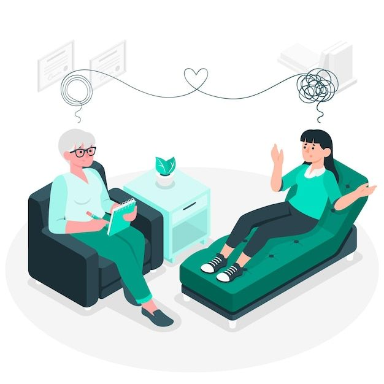

Um psicólogo é um profissional que estuda o comportamento humano, as emoções e os processos mentais, com o objetivo de compreender e ajudar as pessoas a lidarem melhor com suas dificuldades. Ele trabalha com escuta, acolhimento e orientação, oferecendo um espaço seguro para que o indivíduo possa falar sobre seus sentimentos, conflitos e experiências. Por meio do diálogo e de técnicas específicas, o psicólogo auxilia o paciente a entender melhor a si mesmo, identificar padrões de comportamento e encontrar formas mais saudáveis de lidar com os desafios da vida. Além de atuar em consultórios e clínicas, o psicólogo também pode trabalhar em escolas, empresas, hospitais, instituições públicas e até no sistema judiciário. Ele realiza atendimentos terapêuticos, avaliações psicológicas, presta apoio emocional e contribui para a promoção da saúde mental e do bem-estar das pessoas.
Um psicanalista é um profissional que trabalha com base na psicanálise, uma abordagem criada por Sigmund Freud, que busca compreender o inconsciente e sua influência sobre os pensamentos, sentimentos e comportamentos das pessoas. O psicanalista ajuda o paciente a explorar conteúdos reprimidos, conflitos internos e experiências passadas que, muitas vezes, estão na origem de sintomas como ansiedade, depressão, angústia ou dificuldades nos relacionamentos. As sessões costumam ocorrer com frequência regular e envolvem a escuta atenta e a livre associação, onde o paciente fala livremente tudo o que vier à mente. O psicanalista não oferece conselhos diretos, mas promove reflexões que permitem ao indivíduo se conhecer melhor e encontrar sentidos mais profundos para suas questões. O processo é geralmente longo e visa mudanças duradouras na forma como a pessoa se relaciona consigo mesma e com os outros.